Tick... Tick... Tick...
8 Tick... Tick... Tick...
It's 3 O' clock now. The show starts at 4, right?
113

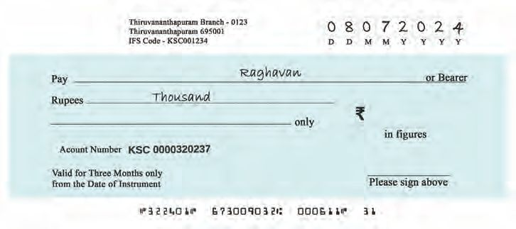
Tick... Tick... Tick...
8 Tick... Tick... Tick...
It's 3 O' clock now. The show starts at 4, right?
113

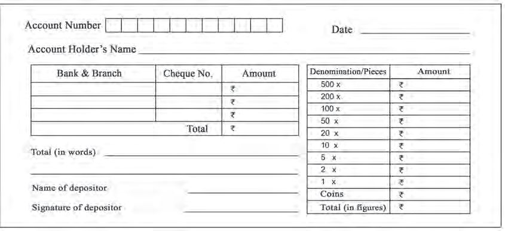
Mathematics Standard - III
To the Circus Tent
Show Times Afternoon: 1pm Evening: 4pm and 7pm Special shows on holidays Morning: 10am Night : 11pm
See the circus tent? Look at the show time.
• What time do the shows start on a weekday? • At what times are the special shows on holidays? • How many shows are there on a holidays? • Write all the show times on a holiday, in the corrrect order.
114


Tick... Tick... Tick...
Act out What are the activities that you do daily? At what times do you do them ?
• Waking up in the morning
•
• Brushing teeth
•
•
•
• Going to school
• Going to bed
Enact the activities you do at each of the times given below:
• 6 in the morning
• 1 in the afternoon • 7 in the morning
• 4 in the evening
• 10 in the morning • 9 in the night
What's the Time? The clock shows the time when Tanvi's class started. The hour hand is at 10 and the minute hand is at 12 The time is 10 O' clock.
The short hand is the hour hand,and the long hand is the minute hand
115

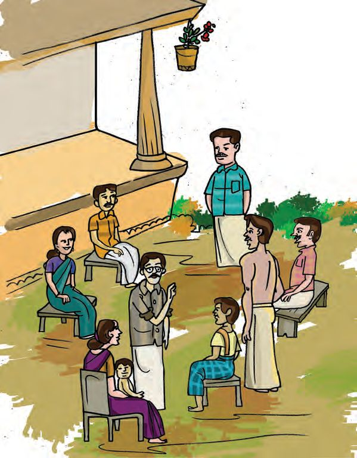

Mathematics Standard - III
Visiting Grandma Tanvi, aren't we visiting grandma tomorrow? Must get up early! Great! We can see grandma tommorrow!
Tanvi woke up early. The time when Tanvi woke up
116

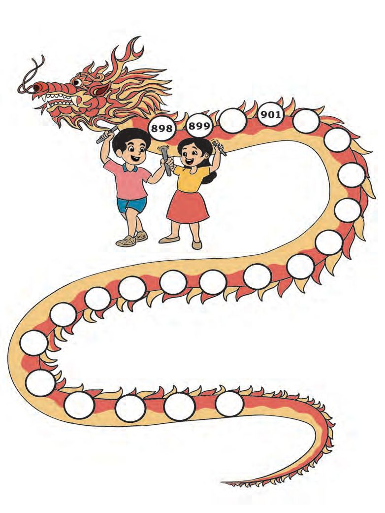
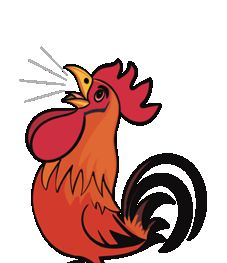
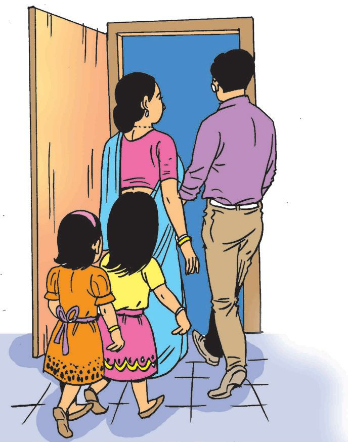
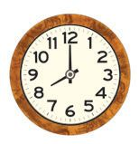

Tick... Tick... Tick...
Breakfast Time
What's the time now?
The minute hand takes 60 minutes for one rotation: That is an hour
The hour hand is midway between 7 and 8. The minute hand is at 6. Time is 30 past 7.
We can also say half past seven
Let's Start It's almost time for the bus. We won't be late, if we start early.
The time when Tanvi started from home.
117

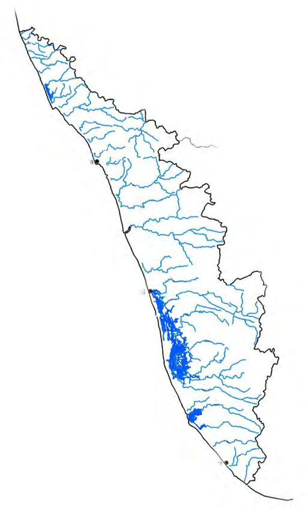
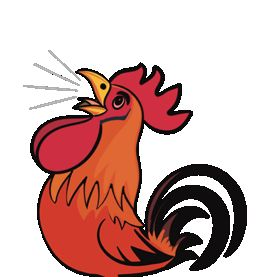
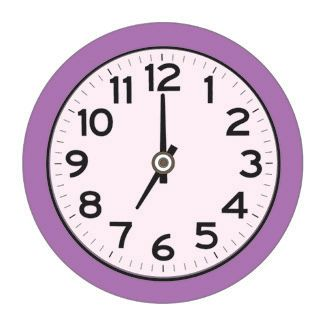
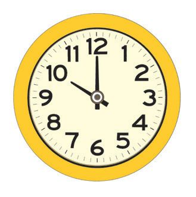
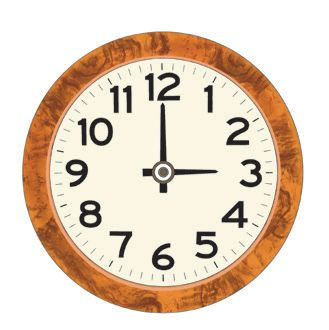
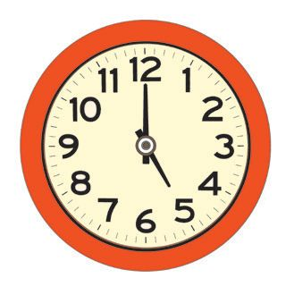
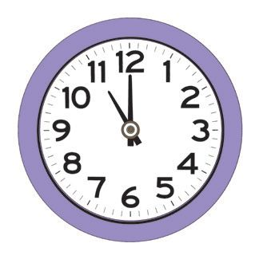
Mathematics Standard - III
At Grandma's See at what time Tanvi reached grandma's house.
We can also say half past nine.
Write down the time.
.......... hours .......... minutes
So nice to see you all
Hi, Grandma!
Match the clocks and the times 1
2
3
4
5
A
B
C
D
E
3 O' clock
11 O' clock
7 O' clock
10 O' clock
5 O' clock
1
2
3
4
5
–
C
–
–
118
–
–

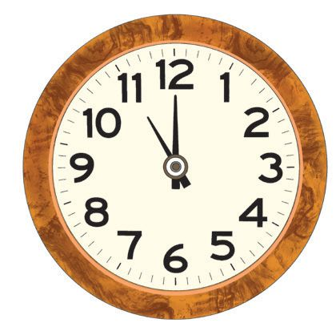
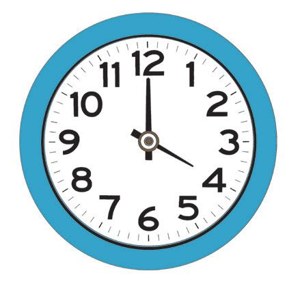
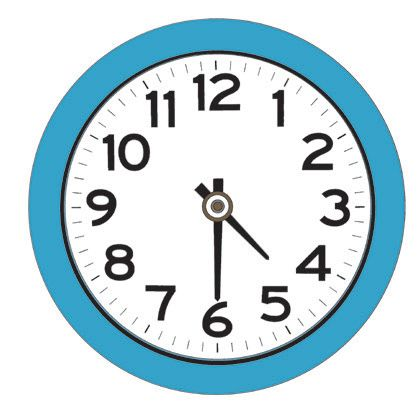
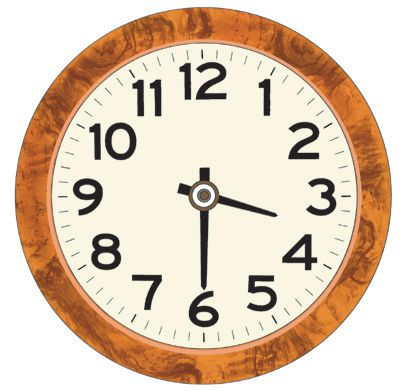
Tick... Tick... Tick...
Complete the table: Hour hand
Minute hand
Time
At 11
At 12
11
Look at the time and draw the hands: 6 O' clock
8 O' clock
5:30
119
1:30

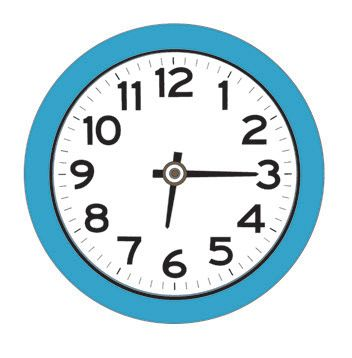


Mathematics Standard - III
At the Park Tanvi is now at the p ark. What is the time? ....... hours ....... minutes
The clock shows the time Tanvi left the p ark. The Hour hand is past 6 and the Minute hand is at 3. Time is 15 p ast 6.
120
We can also say quarter p ast 6


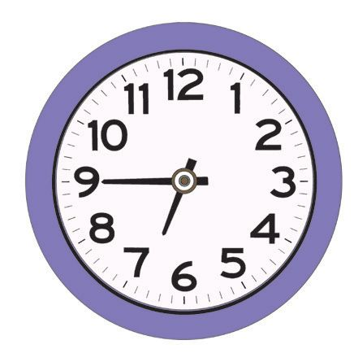
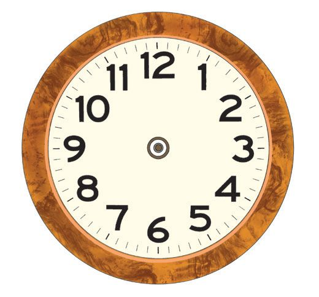
Tick... Tick... Tick...
Look at the time Tanvi returned to grandma's from the park The Hour hand is past 6 and near 7. The Minute hand is at 9. What's the time? 45 past 6.
We can also say quarter
to seven
Draw hands on the clock and write the times below. 10:30
10:45
11:15
Half past ten
Quarter to 11
Quarter past 11
11:45
12:15
12:30
.........................................
.........................................
.........................................
121

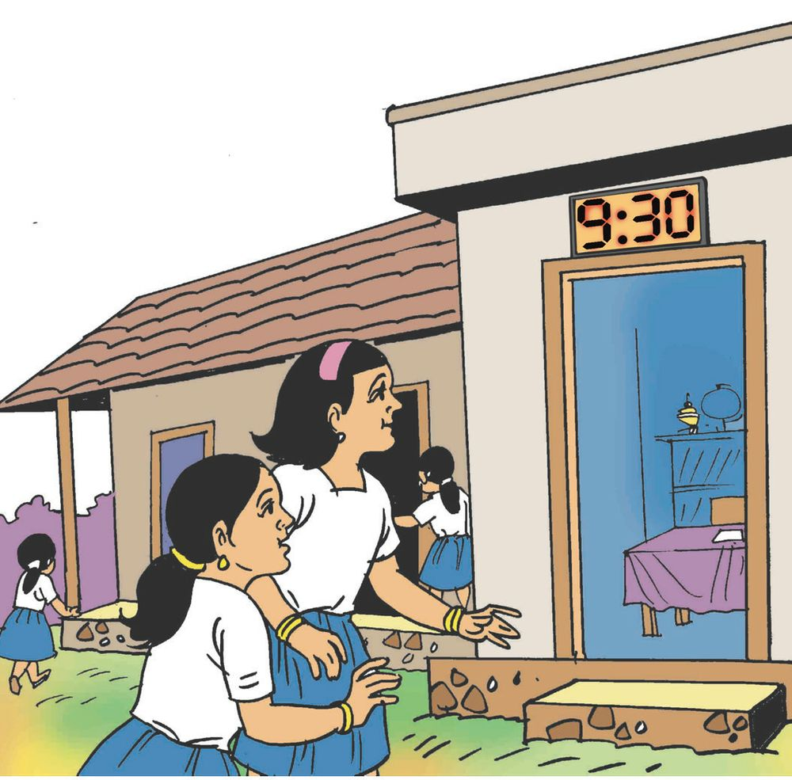
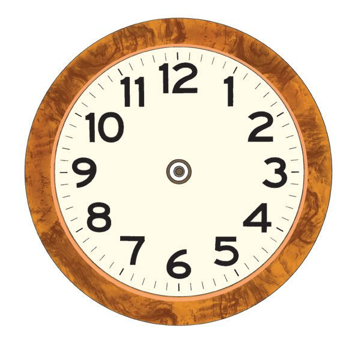
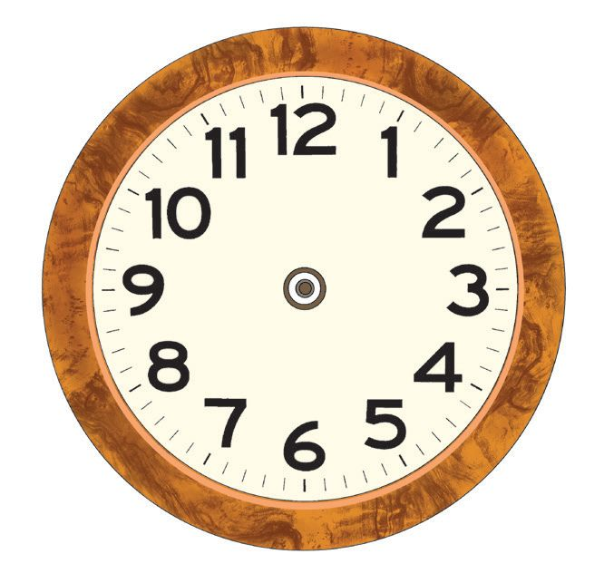
Mathematics Standard - III
My School
Tanvi went to school the next day Time now ........................ . Draw the hands in the clock to show this time.
The class started half an hour after Tanvi reached school. The time when the class started
..........................
Write the time as shown by a digital clock. Draw the hands in the clock to show the time, fifteen minutes after the class started.
Our math teacher is smart.
122
So is his watch

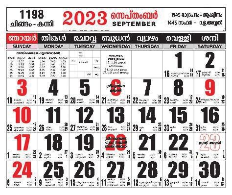
Tick... Tick... Tick...
Aditya -L1 See the news Tanvi read in the newspaper Aditya -L1 is the space craft launched by ISRO to study the sun. It was launched on 2 September, 2023. Mark this day on the calendar
• How many days are there from September 5 to September 23?
Yesterday... Today... Tomorrow... Today's date
Mark this date on the calendar in the class Which month is it? What day of the week is today? What day of the week was yesterday? What about tomorrow? What day of the week is the first of this month? Which is the last day of this month?
123

Mathematics Standard - III
Birthday Mark your birthday on this year's calendar. Write your birthday and your friends' birthdays on a chart paper and display it in your class.
Look at the Calendar and Find the Answers • In which month does a year start? • Which day of the week is the first
of January this year? • Which day of the week is
January 31?
Complete the list Sunday, Monday, ......................................, ......................................,
......................................, ......................................, ......................................, • Which day of the week is
August 15 this year? • December 22 is the National Mathematics Day. Mark it on the
calendar. • Write the names of the months in the correct order.
124


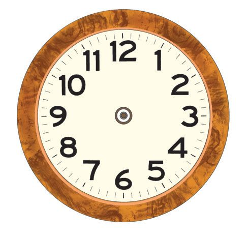
Tick... Tick... Tick...
Assessment 1. The Clock and its Hands
Draw the hands on each clock to show the time given below each picture.
1:00
9:45
2:30
9:15
2. Months
Look at the number of days in each month and write the answers to the questions below. • Which are the months with only 30 days?
•
Which are the months with 31 days?
125

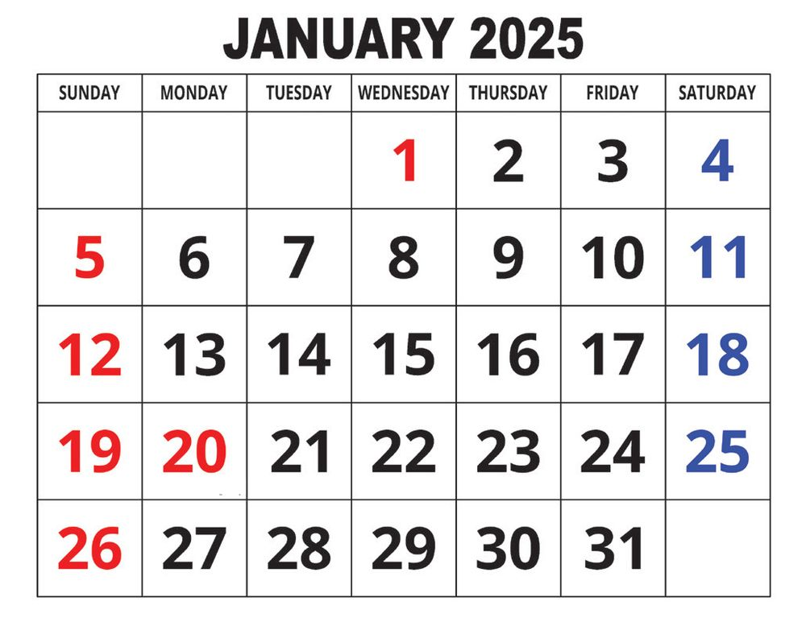
Mathematics Standard - III
3. Calendar
Look at the calendar and write the answers
• Which year's calendar is this?
• Which is the month?
• How many days does this month have? • What is the month before it ? • Which day of the week is the last day of that month?
• Which day of the week is the first day
of this month? • What are the dates of this month which are Sundays?
• Which day of the week are the dates 1, 8, 15, 22, 29?
• Which is the next month? • What day of the week is the first of next month?
• If the day after tomorrow is a Saturday, which day of the week was yesterday?
• Mark our Republic Day on the calendar. 126